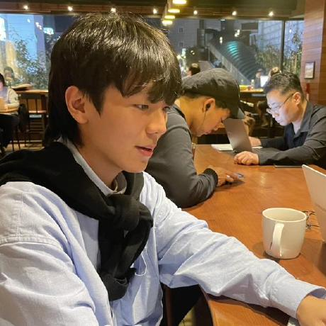

최치원
메인 · 발표
오늘의 정원 메인 화면을 구성하고, MoodGarden의 핵심 소개와 감정별 식물 흐름이 잘 보이도록 화면 내용을 배치했습니다. 발표 흐름을 정리하고 최종 발표도 담당했습니다.
Gardeners
감정을 심고 키우는 MoodGarden 제작 팀입니다.
메인 · 발표
오늘의 정원 메인 화면을 구성하고, MoodGarden의 핵심 소개와 감정별 식물 흐름이 잘 보이도록 화면 내용을 배치했습니다. 발표 흐름을 정리하고 최종 발표도 담당했습니다.
기획 · 폼 · 게임 · 가드너
MoodGarden 웹사이트의 전체 컨셉과 큰 흐름을 기획했습니다. 감정심기 폼을 구성하고, 폼에서 입력한 감정이 돌보기 흐름으로 이어지도록 연결했습니다. 감정별 돌보기 게임, 꽃 그래픽과 성장 애니메이션, 가드너 소개 페이지를 구현했습니다.

감정 비우기
감정을 익명으로 적고 태우는 감정 비우기 화면을 구현했습니다. 텍스트 입력, 글자 수 표시, 소각 속도 선택, 초기화와 다시 입력하기 흐름을 담당했습니다. 사용자가 기록을 남기지 않고 감정을 비워내는 경험을 만들었습니다.
와이어프레임 · 식물 도감
서비스 화면의 와이어프레임을 설계하고, 감정별 식물 도감 페이지를 구현했습니다. 식물 탭, 상세 설명, 성장 단계 미리보기, 감정별 BGM과 추천 영상 영역을 구성했습니다. 사용자가 감정 식물의 의미를 자세히 탐색할 수 있도록 정리했습니다.
스타일 관리 · PPT
전체 페이지의 공통 스타일과 시각적 톤을 정리하고, 헤더·카드·버튼·반응형 레이아웃이 일관되게 보이도록 다듬었습니다. 페이지별 분위기가 하나의 서비스처럼 이어지도록 스타일을 관리하고 발표 자료 제작도 함께 담당했습니다.
Review
MoodGarden은 사용자가 오늘의 감정과 강도를 입력하면 그 감정에 어울리는 식물을 추천하고, 이후 감정별 돌보기 게임과 식물 도감, 감정 비우기 기능으로 자연스럽게 이어지는 웹 서비스입니다. 단순히 페이지를 나누어 만드는 것에서 끝나지 않고, 폼에서 저장한 감정 정보가 게임 화면으로 전달되고 각 식물의 의미와 성장 단계가 도감에서 다시 설명되도록 흐름을 연결하는 데 집중했습니다.
구현 과정에서는 HTML로 페이지 구조를 잡고, CSS로 공통 카드·버튼·헤더·반응형 레이아웃을 맞추었으며, JavaScript로 감정 선택, localStorage 저장, 미니게임 상호작용, 결과 화면 변경 같은 동작을 구현했습니다. 특히 감정을 식물이라는 시각적 요소로 바꾸고, 클릭·선택·게이지 조작 같은 짧은 행동을 통해 사용자가 자신의 감정을 부담 없이 돌아볼 수 있게 만드는 점이 이 프로젝트의 핵심이었습니다.
팀원별로 메인 화면, 감정 심기, 돌보기 게임, 감정 비우기, 식물 도감, 스타일과 발표 자료를 나누어 맡으면서 각 페이지의 개성을 살리는 동시에 하나의 서비스처럼 보이도록 통일감을 맞추는 경험을 할 수 있었습니다. 이번 프로젝트를 통해 웹 페이지를 꾸미는 것뿐 아니라, 사용자 흐름을 설계하고 여러 기능을 하나의 컨셉으로 묶는 과정의 중요성을 배웠습니다.